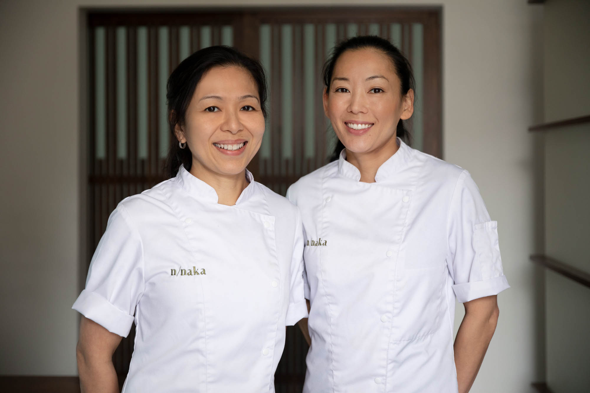

About our Chefs

Shichiro and Sheng started their beginnings as sushi chefs. In the their world, ingredients and preperation was the key to flavors. They decided that the same techniques and care could be placed into the wonderful, favorite dish know as pizza and achieve the same level of sophistication of flavors. Their goal is to bring pizza from being a simple sunday night cheat dish to a mouth watering recipe even the most refined critic could love.